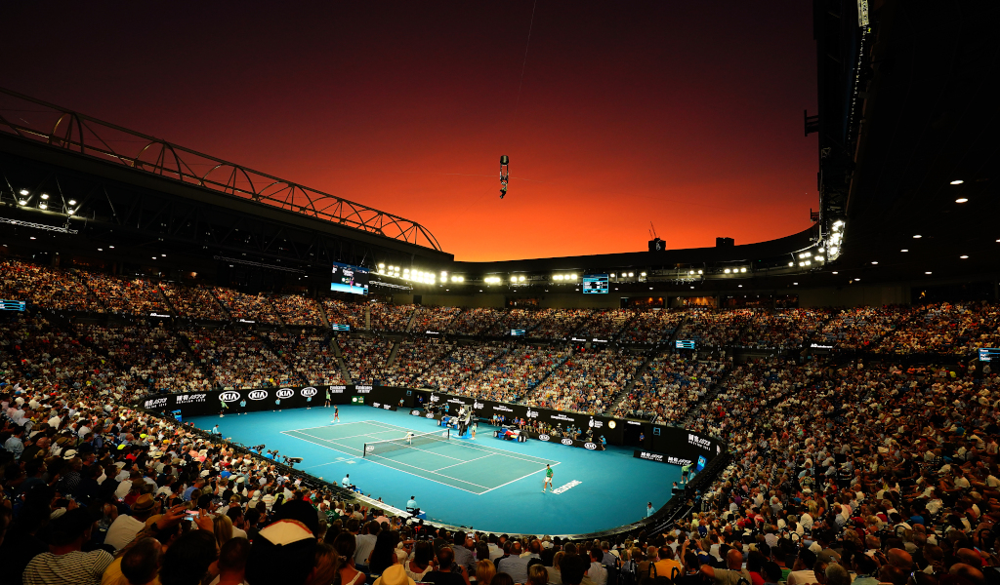

Sejarah
Australian Open adalah salah satu dari empat turnamen Grand Slam dalam tenis lapangan, yang diadakan setiap tahun di Melbourne, Australia. Sejarahnya dimulai pada tahun 1905 ketika turnamen ini pertama kali diadakan di lapangan rumput di Kooyong Lawn Tennis Club. Pada awalnya, Australian Open hanya terbuka untuk pemain Australia dan Selandia Baru. Namun, seiring berjalannya waktu, turnamen ini menjadi lebih internasional dan mulai mengundang peserta dari seluruh dunia.
Pada tahun 1988, Australian Open menjadi turnamen Grand Slam pertama yang membuka pintunya untuk pemain tenis profesional tanpa memandang status profesional atau amatir. Keputusan ini membuka jalan bagi partisipasi pemain terbaik dunia dalam turnamen ini. Sejak saat itu, Australian Open terus berkembang menjadi salah satu turnamen tenis paling prestisius di dunia, menarik perhatian penonton global dengan fasilitas modern, lapangan tenis kelas dunia, dan persaingan ketat di antara para pemain terbaik.
